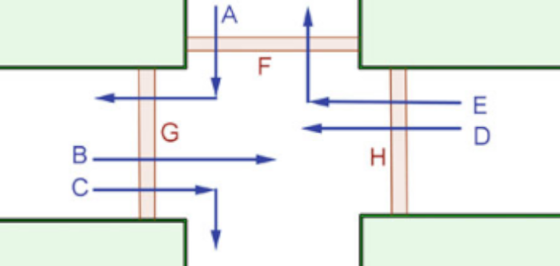
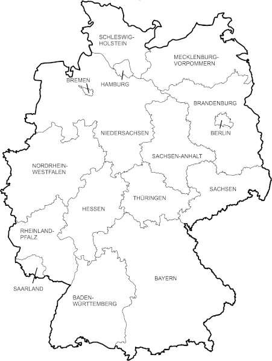
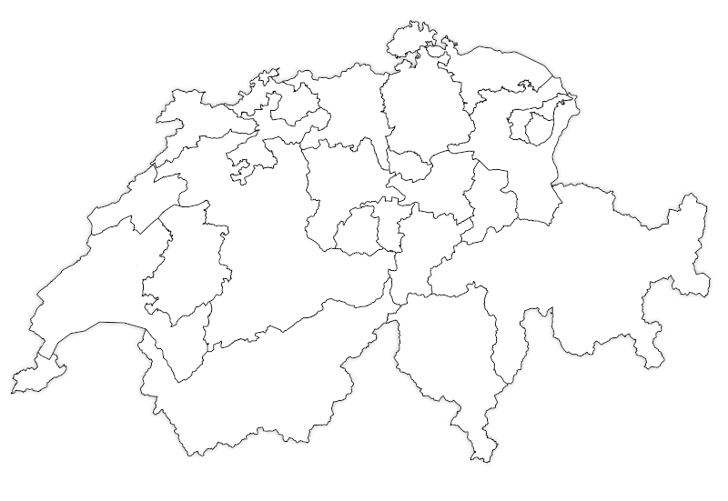
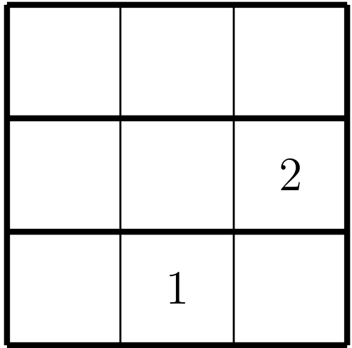
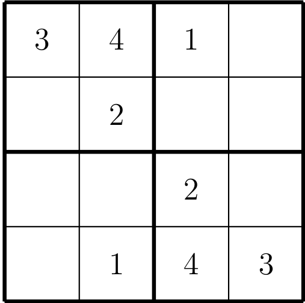
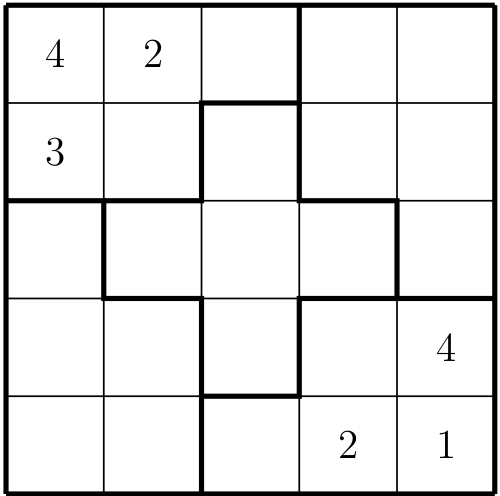

Build New Graphs
Build Custom Graph
Build Complete Graph
Build Cycle Graph
Build Wheel Graph
Build Random Graph
Load Exercise Graphs
Graph G1
Graph G2
Graph G3
Graph G4
Graph G5
Graph G6
Graph G7
Graph G8
Graph G9
Graph G10
Graph CH
Graph 4x4
Load Background
Reset
Verkehrskreuzung
Karte der Bundesländer
Karte der Schweiz
Sudoku 3x3
Sudoku 4x4
Sudoku 5x5
Import/Export
Import File
Export To File
Options
Help
Stop Tasks
About
Graph Tools
Reset Node Color
New Graph Layout
Get Vertex Degrees
Check Coloring
Algorithms
Graph Properties
Results
     